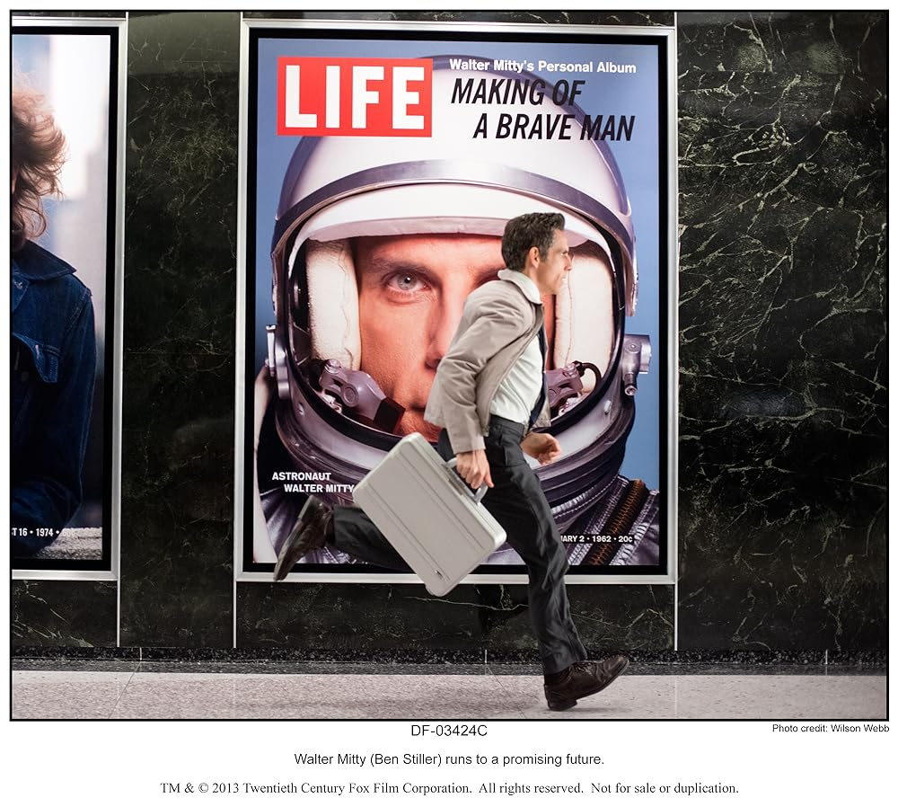

Spider-Man Into the Spider-Verse
How could I forget Spider-Man? It is a mandate by law of the Parker Codes. I had to include at least one Spider-Man and this what I would pick. In many ways, this is a coming of age story. It's about being granted gifts, fulfilling the responsibilities of it, and the fear that comes with that.
Past Lives
- (the korean word for past lives) - its about fate and reality - its about being hopelessly in-love be it with an idea or a person - its about the difference in language and culture - its about coming to terms with reality
Secret Life of Walter Mitty
- its about carpe diem - its about the little things - its about the unsung heros - its about the sad death of physical media - Video killed the radio star
Boyhood
class="description" - its about growing up - the pains of divorce - its about life. -